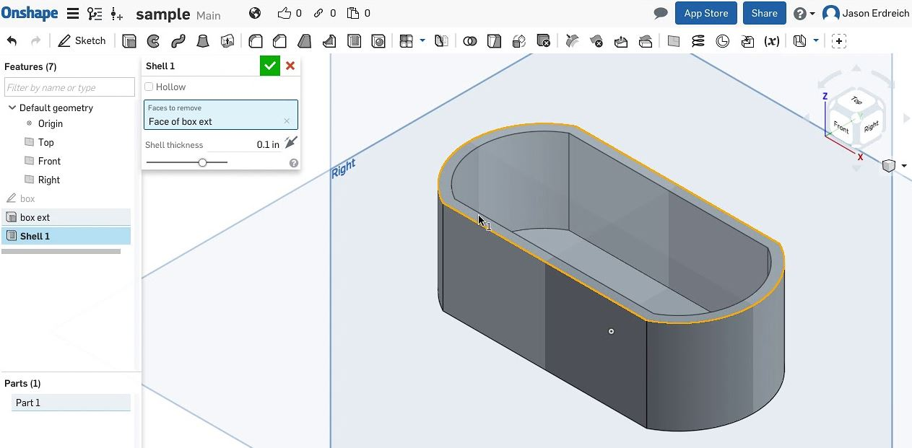

<!-- #header End -->
</head>
		<body>	
		  <header id="header">
		    <div class="container main-menu">
		    	<div class="row align-items-center justify-content-between d-flex">
			      <div id="logo">
			        <a href="index.html"></a>
			      </div>
			      <nav id="nav-menu-container">
			        <ul class="nav-menu">
			          <li><a href="index.html">Home</a></li>
			          <li><a href="about.html">Training Days</a></li>
				          					          		          
			          <li><a href="contact.html">Contact</a></li>
			        </ul>
			      </nav><!-- #nav-menu-container -->		    		
		    	</div>
		    </div>
		  </header>
		</body>	
</head>
<!-- #header End -->


						<!-- Start Day 3 Area -->
			<div class="single-testimonial item d-flex flex-row">
		        <div class="thumb">
					</div>
		                  <div class="desc">
		                    <p>
		                        <h4 style="text-align:left"> <a href= "I:\AKGEC\personal/Day3.html"> Day 3 </a> </h4><br>
						        
									<h4 style="text-align:left">GitHub</h4><br>
                                    <p> The session was conducted Mr. Vikram Rajpur <p>
									<h style="text-align:justify"> GitHUb is a web-based hosting service of Microsoft. It is commonly used to host open-source software projects. </h>
										
										<h5 style="text-align:left">Learning outcomes:</h5><br>
											<ul>
											
											<li>We have learnt about the several importance features of Github such as installing Github software, Create a repository, and uploading files.</li>
											<li>We made our own personal webpage and uploded it using GitHub. </li>
											</ul> <br>
										
										<h4 style="text-align:left">NX 11.0</h4><br>
										<h style="text-align:justify"> NX is a software which used for design, manufacture and engineering analysis.</h>
									    <h5 style="text-align:left">Learning outcomes:</h5><br>
											<ul>
											<li>basic concept of 3D modeling using NX 11.0 software</li>
											<li>we learnt different basic tools for line drawing, circle drawing, spline curve, drawing, rectangle, etc. </li>
											<li>Therefore, we draw a sample sketch design</li>
											</ul> <br>
						<div class="col-lg-6 col-md-6 home-about-left">
							
						</div><br><br>
						<p> Fig 3.1: 2D Part drawing 1</p><br><br>
						<div class="col-lg-6 col-md-6 home-about-left">
							
						</div><br><br>
						<p> Fig 3.2: 2D Part drawing 2</p><br><br>
																		
										<h4 style="text-align:left">OnShape</h4><br>
										<p>The session was conducted by Mr. Puneeth Raj. </p>
										<h style="text-align:justify"> OnShape is a cloud based computer aided design (CAD) software which used for design, manufacture and engineering analysis.</h>
									    <h5 style="text-align:left">Learning outcomes:</h5><br>
											<ul>
											<li>At first, we create an account in OnShape.</li>
											<li>We learnt different basic tools for line drawing, circle drawing, spline curve, drawing, rectangle, etc. </li>
											<li>Then we learnt, basic concept of 3D modeling using OnShape software</li>
											<li>Finally, we made a small design using OnShape.</li>
											</ul> <br><br>
						<div class="col-lg-6 col-md-6 home-about-left">
							
						</div><br><br>
						<p> Fig 3.3: Part drawing in OnShape</p><br><br>

								<h4 style="text-align:left">Laser Cutter</h4><br>
                                <p> The session was conducted by Mr. Amit Sharma <p><br><br>
								<ul>
											<li>Laser cutter is a machine used for cutting materials using laser and applied for manufacturing.</li>
											<li>We learnt RDWorks software that allows you to perform laser cutting and engraving operations. </li>
											</ul> 
					    <div class="col-lg-6 col-md-6 home-about-left">
							
						</div><br><br>
							<p> Fig 3.4: Laser Cutter</p><br><br>
							</p>
		                </div>
					</div>
					
<br>
<br>

<h4 style="text-align:left"><a href= "E:\AKGEC\personal/Day4.html"> Day 4 (19 July 2018, Thu)</a> </h4><br>